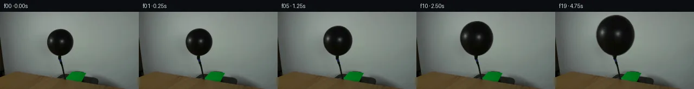
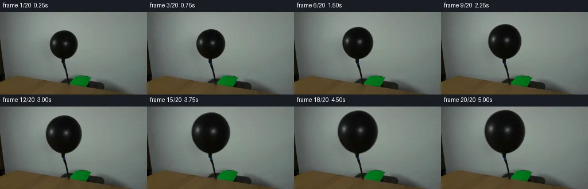
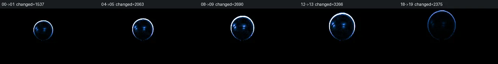

V0 · 初版即最终版
![]()
Observable Generation Trace
把最终像素视频、Harness 冻结的每轮候选、真实工具事件和 Agent 自述放在同一页。可观测证据与模型自述分开标记，避免把“模型说它检查过”误当成真实工具调用。
![首帧]()
Static locked-off single-shot with fixed frame throughout filmed with constant framerate in real-time. The scene shows a realistic scientific demonstration. The scene only contains the described setup and actions. The balloon is attached to a black hose that points upwards from behind a wooden table. Air is being pumped into the black balloon.
首帧显示在左侧播放器初始画面。Track 权限、隔离和 tensor 一致性来自 run manifest，而不是 METHOD.md。
上方并排显示初版和最终版，默认同步播放；下方每个版本可独立播放，也可勾选加入同步播放。仅检查图更新的连续重复快照已合并，回退旧视频仍保留为一次修订。
Observable events
来源：events.jsonl + run manifest
此 Track 禁止读取输出图片。逐轮预览由外部 Harness 自动冻结，只用于事后审计，生成 Agent 当时看不到这些页面。
Frozen candidates
每张图来自该 round 的真实 00 / 01 / 05 / 10 / 19 帧

pixels 1caeb0e7b37858c4 · code c4dc910ce9f3b7e4
--- previous/generate.py +++ current/generate.py @@ -0,0 +1,126 @@ +#!/usr/bin/env python3 +"""Generate a locked-camera sequence of the black balloon inflating. + +The balloon pixels are sampled from the photographed balloon itself. A soft +silhouette is warped about the fixed neck so the wall/table/setup are not +regenerated or repainted. +""" +from pathlib import Path + +import cv2 +import numpy as np +from PIL import Image, ImageDraw + +import artifact_io + + +ROOT = Path(__file__).resolve().parent +H, W = 144, 256 +ANCHOR_X, ANCHOR_Y = 110.5, 82.0 + +# Targets recorded before implementation in OBSERVATION.md. +SCALES = np.array([ + 1.000, 1.019, 1.039, 1.061, 1.085, + 1.111, 1.139, 1.169, 1.201, 1.235, + 1.270, 1.305, 1.340, 1.372, 1.401, + 1.425, 1.445, 1.461, 1.473, 1.480, +], dtype=np.float32) + + +def source_balloon_alpha() -> np.ndarray: + """Return a hand-measured, antialiased alpha for the balloon body. + + Points follow the dark silhouette in first_frame.png. The very narrow + neck/hose below y=82 is deliberately excluded, because it remains fixed. + """ + contour = np.array([ + [107, 31], [116, 31], [123, 34], [129, 39], [133, 45], + [136, 52], [136, 60], [134, 67], [131, 73], [127, 78], + [121, 81], [115, 83], [107, 83], [101, 80], [96, 77], + [92, 72], [88, 66], [86, 59], [86, 52], [88, 45], + [91, 40], [97, 35], [102, 33], + ], dtype=np.int32) + + # Supersampling gives a clean subpixel rubber edge without introducing a + # separately synthesized outline. + ss = 4 + hi = np.zeros((H * ss, W * ss), np.uint8) + cv2.fillPoly(hi, [contour * ss], 255, lineType=cv2.LINE_AA) + alpha = cv2.resize(hi, (W, H), interpolation=cv2.INTER_AREA).astype(np.float32) / 255.0 + alpha = cv2.GaussianBlur(alpha, (0, 0), 0.32) + return np.clip(alpha, 0.0, 1.0) + + +def inflate_frame(src: np.ndarray, src_alpha: np.ndarray, scale: float) -> np.ndarray: + """Warp the photographed membrane about its stationary attachment point.""" + if scale == 1.0: + return src.copy() + + # Slightly greater vertical stretch makes the top rise while the tied + # bottom stays put. The difference is subtle and remains balloon-like. + sx = 1.0 + 0.95 * (scale - 1.0) + sy = 1.0 + 1.08 * (scale - 1.0) + yy, xx = np.mgrid[0:H, 0:W].astype(np.float32) + map_x = ANCHOR_X + (xx - ANCHOR_X) / sx + map_y = ANCHOR_Y + (yy - ANCHOR_Y) / sy + + warped_rgb = cv2.remap( + src, map_x, map_y, interpolation=cv2.INTER_CUBIC, + borderMode=cv2.BORDER_REPLICATE, + ).astype(np.float32) + warped_alpha = cv2.remap( + src_alpha, map_x, map_y, interpolation=cv2.INTER_LINEAR, + borderMode=cv2.BORDER_CONSTANT, borderValue=0, + ) + + # Very restrained material response: as latex stretches it becomes a + # little more evenly lit, while the photographed highlight remains the + # main source of surface detail. This correction only affects the mask. + u = (map_x - 111.0) / 25.0 + v = (map_y - 57.0) / 26.0 + radial = np.clip(1.0 - (u * u + v * v), 0.0, 1.0) + progress = (scale - 1.0) / (SCALES[-1] - 1.0) + lift = (1.2 * progress * radial)[..., None] + warped_rgb = np.clip(warped_rgb + lift, 0, 255) + + a = warped_alpha[..., None] + out = src.astype(np.float32) * (1.0 - a) + warped_rgb * a … diff truncated; 39 more lines …
Final visual checks
Harness 保存的最终产物


Agent claims
以下文字由生成 Agent 撰写，不等同于工具证据
The camera, wall, table, hose, and pump remain exactly fixed. Frame 00 is an exact copy of first_frame.png. From frames 01–19, the balloon expands continuously as air is pumped through the hose. The balloon's tied/attached bottom stays fixed near (111, 84), while its sides move outward and its top rises. Growth is smooth and monotonic, with a small amount of realistic easing: quicker visible expansion through the middle and a slight slowdown as the rubber becomes taut. The final linear size is about 1.48 times the starting size (roughly x=74–148, y=5–85), large enough to make inflation unmistakable without leaving the frame.
Frame-by-frame target scale about the fixed neck:
| Frame | Time | Scale | Event |
|---|---|---|---|
| 00 | 0.00 s | 1.000 | Exact input frame |
| 01 | 0.25 s | 1.019 | Inflation begins |
| 02 | 0.50 s | 1.039 | Balloon expands subtly |
| 03 | 0.75 s | 1.061 | Top rises and sides widen |
| 04 | 1.00 s | 1.085 | Continuous inflation |
| 05 | 1.25 s | 1.111 | Continuous inflation |
| 06 | 1.50 s | 1.139 | Rubber becomes visibly fuller |
| 07 | 1.75 s | 1.169 | Continuous inflation |
| 08 | 2.00 s | 1.201 | Mid-inflation |
| 09 | 2.25 s | 1.235 | Continuous inflation |
| 10 | 2.50 s | 1.270 | Continuous inflation |
| 11 | 2.75 s | 1.305 | Continuous inflation |
| 12 | 3.00 s | 1.340 | Large rounded balloon |
| 13 | 3.25 s | 1.372 | Expansion begins easing |
| 14 | 3.50 s | 1.401 | Continuous, slower inflation |
| 15 | 3.75 s | 1.425 | Balloon grows more taut |
| 16 | 4.00 s | 1.445 | Slow final expansion |
| 17 | 4.25 s | 1.461 | Slow final expansion |
| 18 | 4.50 s | 1.473 | Nearly final size |
| 19 | 4.75 s | 1.480 | Final inflated state; no pop |
The existing rubber texture and reflections expand with the membrane. A restrained procedural shading correction keeps the center subtly lighter than the rim, while preserving the original black material and highlight placement. There is no camera shake, cut, deflation, popping, or motion in unrelated pixels.
I used local Python pixel operations only. Frame 00 is copied directly from first_frame.png. For later frames, I measured the original black balloon silhouette and created a supersampled antialiased alpha mask around only its rubber body. I inverse-warped the original photographed balloon pixels about the fixed attachment point at approximately (110.5, 82), using smooth monotonic horizontal and vertical scale factors. This makes the sides expand and the top rise while the neck, hose, table, green pump component, wall, lighting, and camera remain fixed.
The render reuses the input balloon's actual dark rubber texture and specular reflections rather than drawing a replacement object. A sub-2-level, center-weighted brightness correction models slight redistribution of light as the latex stretches. The correction is restricted by the warped balloon alpha. Each later frame is composited over the unchanged first frame, so pixels outside the balloon's swept silhouette remain source-identical.
pixels.npz stores the required uint32 0xRRGGBB tensor in (144, 256, 20) order. The PNG frames and HTML player are produced from the same in-memory RGB array. inspection.png is the standard chronological contact sheet, while transition_check.png contains fixed-gain per-pixel difference maps for selected adjacent transitions. I did not use an image-viewing tool to inspect generated outputs; validation was performed with local numeric checks only.